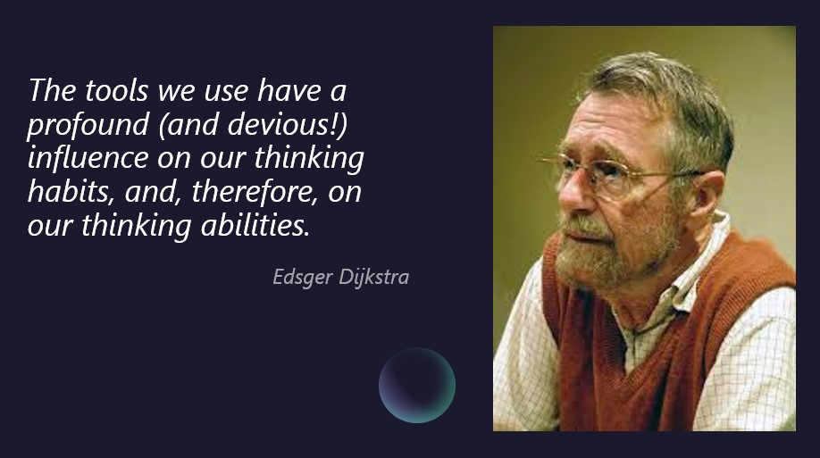
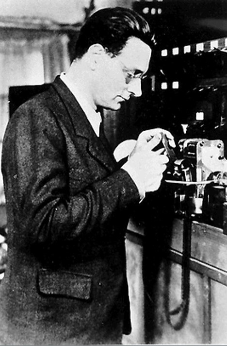
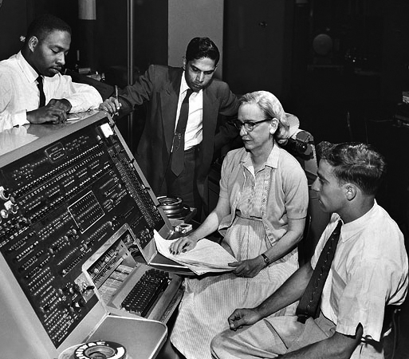

Programação Funcional
Frank Coelho de Alcantara - 2021
Professor

Pai, marido, professor, engenheiro eletricista especializado em eletrônica,
Mestre em Ciência Gestão e Tecnologia da Informação, CTO da Tefway Tecnologia, consultor e curioso.
Muito Curioso!
Estou no Linkedin - e gostaria de tê-los na minha rede de relacionamentos.
Introdução

Introdução
Veremos um pouco da história da computação e da história das linguagens de programação.
Vamos tratar de cálculo lambda, visto como base das linguagens funcionais, e da forma como ele influenciou a computação.
Por fim, estudaremos aplicações práticas, de mercado, de linguagens funcionais. Com destaque para a Clojure e para o Haskel.
A Raiz de Todo Mal
Paradoxo de Russell: Considere a seguinte definição: $$R=\{X | X \notin X\}$$
Seria $R$ um item de $R$?
Suponha que não. Neste caso: $R \in \{X | X \notin X\}$ logo: $R \in R$.
Suponha que sim. Neste caso: $R \in \{X | X \notin X\}$ logo: $R \notin R$.
O que um barbeiro tem com isso?
Um barbeiro é aquele que barbeia todos os que não barbeiam a si mesmos.
A grade dúvida: será que o barbeiro barbeia a si mesmo?
Por isso chamamos de Teoria Ingênua dos Conjuntos.
Seria impossível provar toda a matemática?
A base matemática
David Hilbert, Wilhem Ackermann e Entscheidungsproblem, O Problema da Decisão (1928): dado uma proposição lógica de primeira ordem, crie um procedimento efetivo, para determinar sua veracidade.
Alonzo Church e o Cálculo Lambda.
Kurt Gödel, Jaques Herbrand e o cálculo recursivo.
Alan Turing e On Computable Numbers, with an Application to the Entscheidungsproblem.
Gödel e Church
Gödel (1934): Discute ideias sobre a computabilidade, ou não, de funções. Mostra pouca confiança nos seus próprios resultados.
Church (1936): Inventa o cálculo Lambda. E sugere que este pode ser usado para definir o que é, ou não é computável.
Gödel, Post (1936): argumentam que os argumentos de Church não se justificam.
Turing (1936): descreve um novo modelo de computação, que conhecemos como Máquinas de Turing.
Turing (1937): Turing e Church provam que a Máquina de Turing é equivalente ao Cálculo Lambda.
Church e Turing
“Every effectively calculable function can be computed by a Turing-machine transducer.”
Isto será verdade desde que uma definição matemática, e precisa, do termo, efetivamente calculável seja apresentada (Kleene, 1943).
A Máquina de Turing, continua sendo a forma de definir a computabilidade, ou não, de um problema, para todas as definições de efetivamente calculável apresentadas até hoje.
Máquina de Turing

Computabilidade
Um função/linguagem é dita computável desde que exista, pelo menos, uma Maquina de Turing que Sempre Pare para esta função/linguagem.
Uma função é dita computável desde que exista, pelo menos, uma Maquina de Turing que Sempre Pare para esta função e retorne o seu resultado.
Uma linguagem é dita computável desde que exista, pelo menos, uma Maquina de Turing que Sempre Pare e retorne a informação se o string de entrada faz parte desta linguagem, ou não.
Os primeiros anos
O conceito de linguagem de programação começou a ser construído a partir de 1946 com a criação de Plankalkül por Konrad Suze, um engenheiro alemão que criou o primeiro computador com relés e com a sua própria linguagem de programação, Plankalkül.
Só a versão 4 das suas máquinas sobreviveu a Segunda Guerra Mundial e seu trabalho só foi publicado em 1972.
Grace Hopper
Podemos correr o risco de afirmar que o compilador, foi criado em 1951 pela equipe liderada por Grace Hopper enquanto trabalhava na Remington Rand, e chamado de A-0.
Source Flickr: Grace Hopper and UNIVAC
Lisp, Fortran e Cobol
Em 1956 John McCarthy cria o Lisp - LISt Processing graças a uma dúvida de Graham em aula
Em 1957 John Backus, trabalhando na IBM, criou o Fortran (FORmula TRANslation).
Em 1959 Grace Hopper, apresenta o Cobol - COmmon Business Oriented Language.
Em 1962 Ole-Johan Dahl e Kristen Nygaard criam a Simula em Oslo.